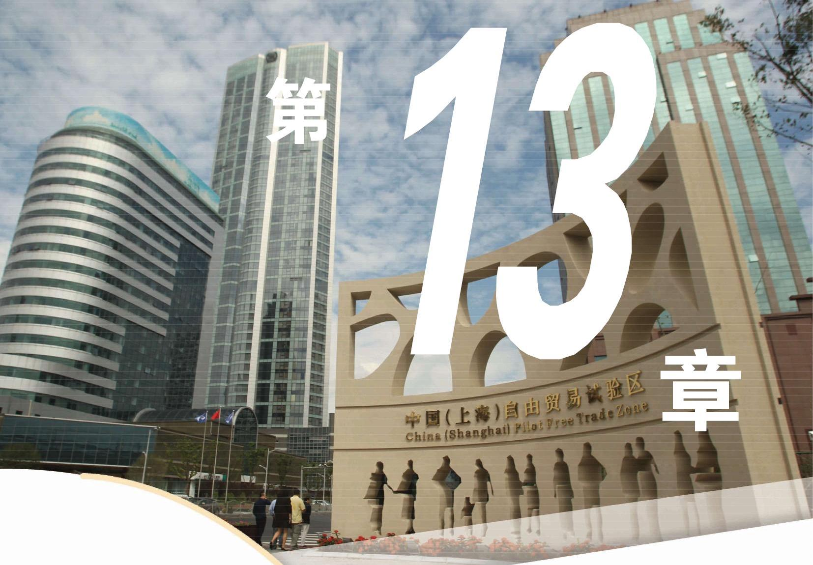
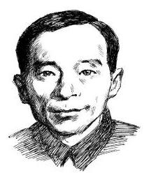

统计学的核心是数据分析, 是指针对研究

对象获取数据，运用数学方法对数据进行整理、分析、推断和决策的过程. “用数据说话” 已经成为当今时代的一个特征.
统计
在病人手指上采一滴血，就能查出病人的白细胞数值是否正常. 从河里取出一杯水，就可以检测出这一段河道的水质情况. 根据所要研究的问题有效地收集数据，并通过分析数据来发现其中的规律乃是统计研究之本.
统计学研究的问题是随机的、具有非确定性的, 通过抽样的数据对总体进行推断, 就是通过个别来推断一般，主要是一种归纳推理. 因此, 在学习本章内容时, 要注意统计思维与确定性思维的差异，初步体会解决统计问题的一般过程与方法.

许宝騄(1910—1970)， 中国数学家, 中国科学院学部委员. 他的研究领域涉及统计推断、极限理论、马尔可夫过程等. 他是中国概率论数理统计教学和科学研究的开创者.
(1)要考查某班级全体学生的身高，就可以通过测量该班每个学生的身高组成一个总体，其中的每个学生的身高就是一个个体. 这样的总体只包含有限个个体, 我们可以把它们全部列出来. 如果我们要考查上海高一学生的身高, 那么总体就是所有上海高一学生的身高. 虽然这也是一个有限总体, 但其容量显然比前面的总体大得多.
(2)2018 年，教育部基础教育质量监测中心发布了《中国义务教育质量监测报告》，抽取了全国 31 个省(自治区、直辖市)和新疆生产建设兵团共 973 个县(市、区)的 572 314 名四、八年级学生进行体质健康状况调查, 调查的指标包括肺活量和 50 米跑的成绩等. 在这项研究中, “义务教育阶段全国学生的肺活量”和 “义务教育阶段全国学生的 50 米跑成绩”是两个总体. “572314 名学生的肺活量”和 “572314 名学生的 50 米跑成绩” 分别是上述两个总体的样本. 调查结果表明: 四年级学生肺活量达到及格标准的比例 (以下简称“达标率”) 为 98.1%，优秀率为 33.4%；几年级学生肺活量达标率为 95.9%，优秀率为 31.0%。四年级学生 50 米跑达标率为 96.3%，优秀率为 18.3%；几年级学生 50 米跑达标率为 94.7%，优秀率为 21.4%. “达标率”“优秀率”等用来描述样本特征的概括性数字度量, 称为统计量 (statistic), 我们可以用这些样本的统计量来推断总体的数字特征.
(3)小明从家到学校有两种走法:乘坐公交车可以直达，乘坐地铁需要换乘. 他想研究一下哪种方式更好, 于是分别记录了 50 次乘坐公交车花费的时间和 50 次乘坐地铁花费的时间. 在这个问题中涉及两个总体:一个是“乘坐公交车从小明家到学校花费的时间”，另一个是“乘坐地铁从小明家到学校花费的时间”. 这两个总体都有无穷多的个体, 小明记录的数据分别是它们的样本. 小明的目的是想通过样本的统计量, 如平均花费时间、最少花费时间、最多花费时间等来比较两个总体的优劣.
(4)银行为了调查客户对柜台服务的满意程度，请每位顾客在操作面板上选择一个数字, 其中, 数字 1 表示“非常满意”, 2 表示“比较满意”，3 表示“一般”，4 表示“不满意”，5 表示“非常不满意”. 在这项调查中，“顾客对柜台服务的满意程度”是总体， 其中的数据都是 中的某个数. 如果某个营业日有 100 名顾客对柜台服务进行了评价，那么当日所收集到的 100 个数据就是其中的一个样本.
从上面的例子可以看到, 统计学的具体研究对象是多种多样的, 它们有一个共同的特点, 就是具有不确定性. 例如, 在调查 “某班全体学生的身高”问题时, 虽然每次测量结束后可以得到一组确定的数据, 但由于测量的误差, 这组数据其实只是总体的一个带有误差的样本. 统计活动的基本思想是通过分析样本的统计特征去推断总体的统计特征. 因此, 样本数据的代表性和获取方式十分重要.
例题 · 家庭存书量调查
例 为客观了解上海市民家庭存书量，上海市统计局社情民意调查中心通过 12340 电话调查系统开展专项调查，成功访问了 2007 位上海市民. 在这项调查中, 总体和样本分别是什么? 样本量是多少?
答案与解析收起 / 展开
解 总体是上海市民家庭的存书量, 样本是被成功访问的 2007 位上海市民家庭的存书量, 样本量是 2007.
练习 13.1
练习13.1 · 1
- 为了解上海市某区居民用户的月平均用水量，通过简单随机抽样获取了 100 户居民用户的月平均用水量. 在这个问题中, 总体和样本分别是什么?
答案与解析收起 / 展开
- 总体为某区居民用户的月平均用水量, 样本为 100 户居民用户的月平均用水量.
练习13.1 · 2
- 在下面两个问题中, 总体和样本分别是什么, 样本量是多少?
(1)为了解大学四年级学生毕业后的就业意愿，一项调查联络了 972 名大学四年级学生，并询问他们:“你计划毕业后继续深造还是就业？”
(2)为了解各种品牌饼干的价格行情，一名学生在某超市挑选了 10 种品牌的饼干， 并记录了它们的价格.
答案与解析收起 / 展开
2.(1)总体为大学四年级学生毕业后的就业意愿,样本为 972 名大学四年级学生毕业后的就业意愿,样本量为 972 . (2)总体为各种品牌的饼干的价格,样本为某超市 10 种品牌的饼干的价格, 样本量为 10 .
练习13.1 · 3
- 在国际经合组织主持的国际学生评估项目 (Program for International Student Assessment, 简称 PISA)研究中, 上海 15 岁初中生于 2009 年和 2012 年两次获得全球第一. 2012 年, 上海 155 所学校的 6374 名学生代表全市各类中学约 9 万名 15 岁初中生参加测试, 某研究人员想利用 2012 年 PISA 的数据库考察上海 15 岁初中生的数学成绩. 在该研究人员的研究中, 总体和样本分别是什么?
答案与解析收起 / 展开
- 总体为上海 15 岁初中生的数学成绩, 样本为 2012 年上海 155 所学校的 6374 名学生的 PISA 数学成绩.
习题 13.1
A 组
习题13.1A · 1
- 某农业研究人员为考察三个品种的小麦发芽率, 从中选取麦种若干, 经检测得到数据如下表所示. 在这个问题中, 总体和样本分别是什么? 样本量是多少?
| 品种 | 麦种数 | 发芽数 |
| A | 100 | 92 |
| B | 200 | 189 |
| C | 200 | 182 |
答案与解析收起 / 展开
- 总体为三个品种的小麦的发芽情况, 样本为三个品种共 500 粒麦种的发芽情况, 样本量为 500 .
习题13.1A · 2
- 小王和小张计划调查上海市新生儿的性别情况. 小王调查了最近一个月在 A 医院出生的 320 名新生儿，其中有 156 名女孩，小王由此推断:上海市新生儿男女比例基本均衡. 小张的姐姐在 B 医院待产, 她告诉小张最近一周在 B 医院出生的 18 名新生儿中有 13 名女孩，小张由此推断:上海市新生儿男女比例严重失调. 考虑下面的问题:
(1)在上面的统计活动中，总体和样本分别是什么？
(2)你同意小王和小张的推断吗？请说一说你的理由.
(3)你认为是否可以用上面的样本来推断上海市新生儿的男女比例？请说一说你的理由.
答案与解析收起 / 展开
2.(1)总体为上海市新生儿的性别,小王的样本为最近一个月在 A 医院出生的 320 名新生儿的性别,小张的样本为最近一周在 B 医院出生的 18 名新生儿的性别. (2)不同意,无论是小王选取的样本还是小张选取的样本都无法代表上海市新生儿的性别情况. (3) 不可以, 小王和小张选取的样本都不具有代表性.
习题13.1A · 3
- 测量队要测量一个池塘的平均深度, 选择了池塘的 150 个不同的位置进行测量, 得到了 150 个数据, 然后用这 150 个数据的平均数来估计池塘的平均深度. 在这项统计活动中, 总体和样本分别是什么?
答案与解析收起 / 展开
- 总体为池塘不同位置的深度, 样本为池塘的 150 个测量点的深度.
B 组
习题13.1B · 1
- 在某校高一年级的期中数学测验中, 很多学生在解决一道应用题时都出现了错误. 教师在试卷分析时说:“看起来，我们高一(3)班的同学解决应用问题比较薄弱. ”请你从统计的角度来讨论下面的问题:
(1)在这个情境中，总体和样本分别是什么？
(2)你同意教师的说法吗？请说明理由.
答案与解析收起 / 展开
1.(1)总体为高一(3)班学生的数学应用问题的解决能力,样本为高一(3)班学生的期中数学测验中一道应用题的答题情况. (2)可以引导同学们讨论一道应用题的答题情况能否代表学生的数学应用问题的解决能力.
习题13.1B · 2
- 统计在日常生活中有大量的应用, 请收集 2 至 3 个统计案例, 并说明其总体和样本分别是什么.
答案与解析收起 / 展开